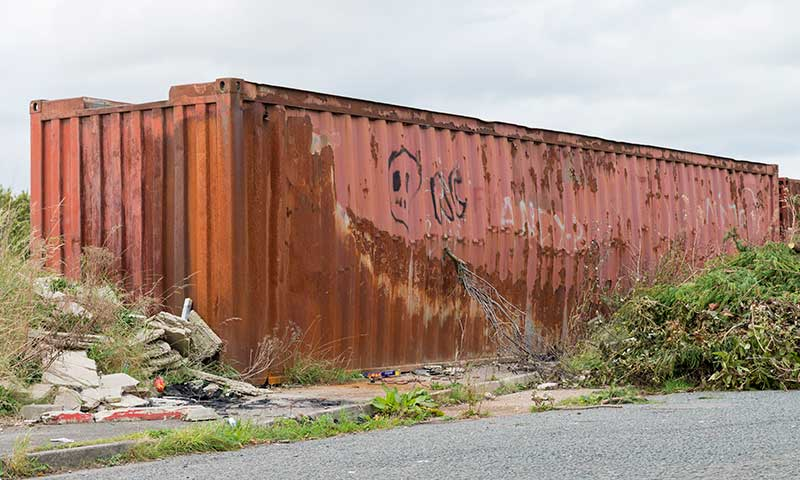
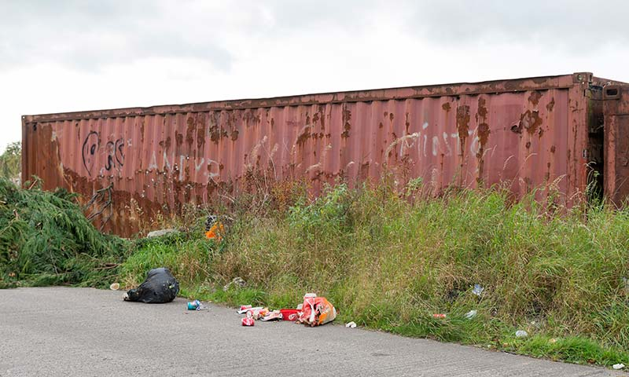
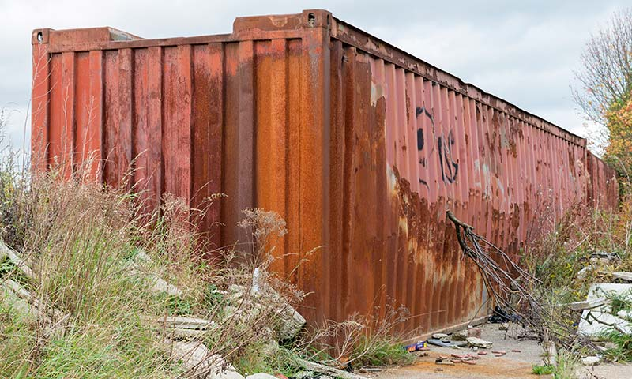
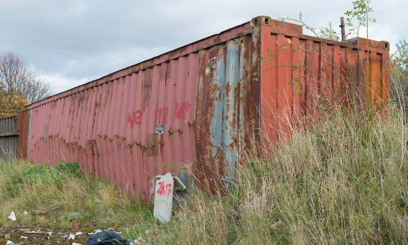
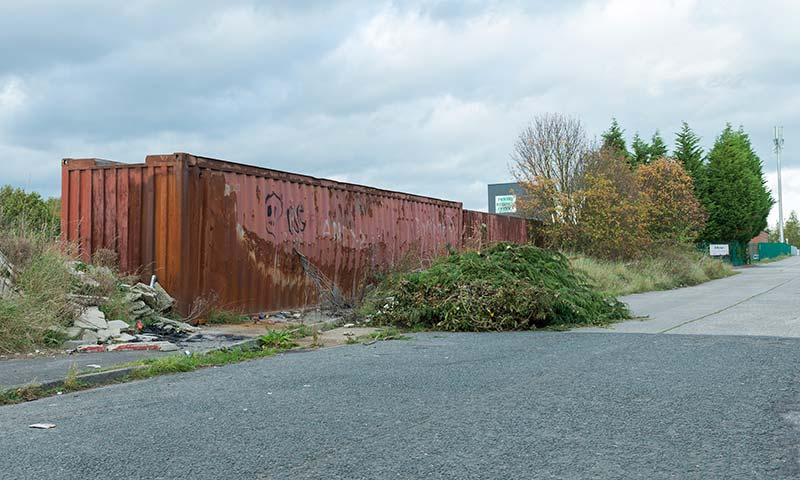
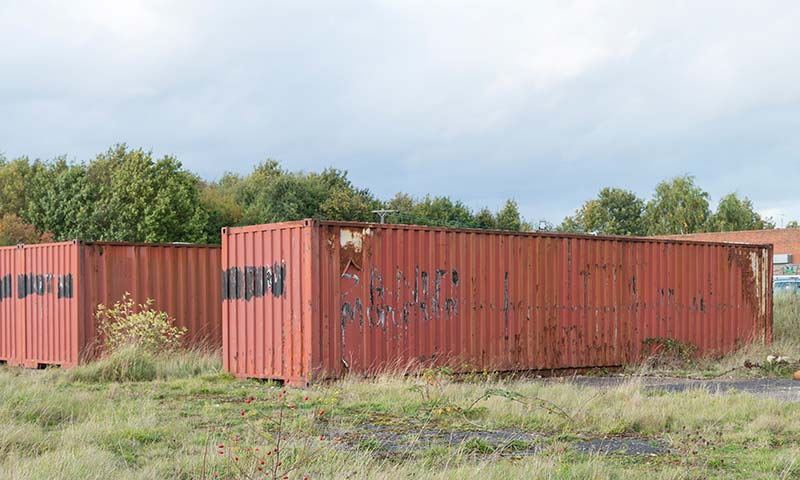
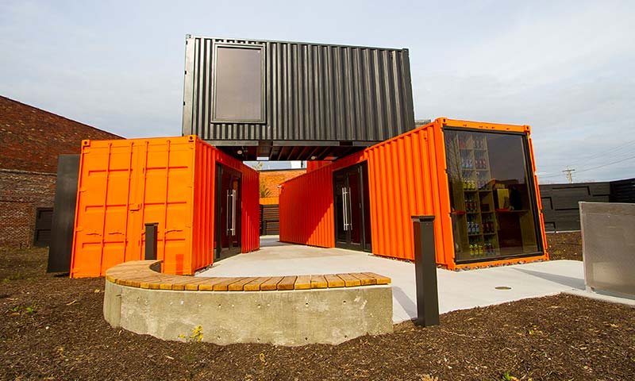
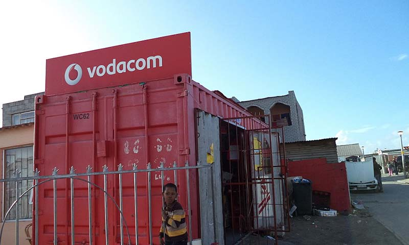
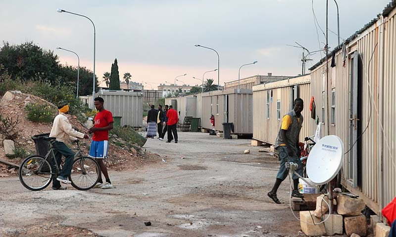
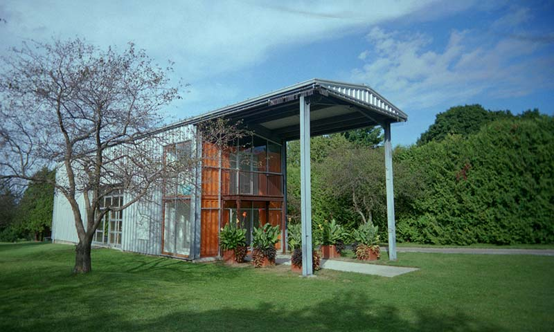

The abandoned container on Wentworth Terrace in Fitzwilliam, Pontefract.

Another view of the container surrounded by vegetation and rubbish.

A view from the end of the container surrounded by rubbish.

An image taken from the other side of the abandoned container.

The view from the road of the abandoned container.

Other shipping containers close by in a field.Close-up of some of the graffiti on the container.
Logistics
View from above of a shipping container port.The army have used Chinook helicopters to transport containers.Ships can spend hours in ports getting unloaded and loaded.A large stack of colourful shipping containers.
Creative Uses - Recycling

Shipping containers used for a retail shop at Copper & Kings Brandy Distillery.

A cheap way to build a shop in Africa is with shipping containers.

Containers can provide a quick and easy way to build refugee camps.

Building houses is one of the most common uses for old shipping containers.